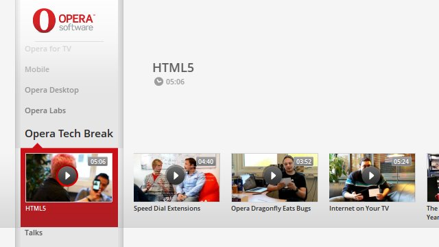
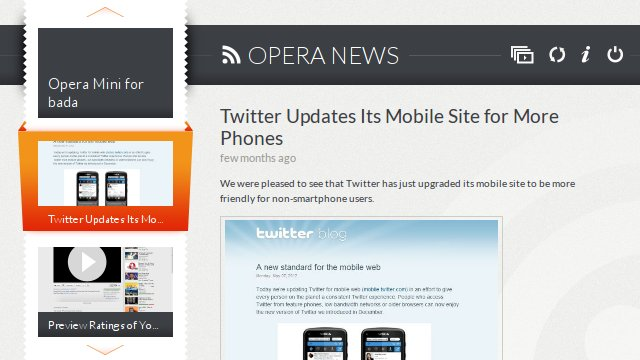

Mẫu (template) cho kho ứng dụng Opera TV Store
Giới thiệu
Kể từ khi ra mắt kho ứng dụng Opera TV Store, chúng tôi nhận thấy có rất nhiều ứng dụng được viết và xuất bản bởi các lập trình viên và được nhiều người dùng đón nhận xử dụng. Trên thực tế, các ứng dụng cho TV của chúng tôi được xây dựng dựa trên các tiêu chuẩn Web, điều đó cho phép các lập trình viên có thể sử dụng những kỹ năng sẵn có của họ để tạo ra các ứng dụng nội dung dành cho TV. Việc phát triển ứng dụng cho TV có thể vẫn còn khá lạ lẫm, để giải quyết vấn đề đó, chúng tôi đã tạo sẵn một số mẫu code ứng dụng phổ biến (template) để lập trình viên có thể tự do sử dụng chúng.
Trên bất cứ nền tảng nào, tin tức và giải trí đều được đánh giá là những nội dung phổ biến, do đó, các mẫu code ứng dụng có sẵn (template) của chúng tôi tập trung cho định dạng trình xem video hoặc trình đọc tin RSS. Mục đích của chúng là nhắm tới việc dễ dàng tối ưu hóa để các bạn có thể nhanh chóng tạo ra ứng dụng mang thương hiệu của bạn mà không phải lo lắng về thời gian và tiền bạc.
Mẫu (template) cho trình xem video

Hình 1: Mẫu (template) trình xem video đang xử dụng.
Tổng quan
Mẫu ứng dụng trình xem video không chỉ đơn giản như một trình xem video – Nó cho phép bạn chia tách thành các kênh dựa trên tiêu chí chủ đề hay đề tài. Ngoài ra nó còn có tính năng đánh dấu được tích hợp sẵn cho phép người dùng di chuyển các video mà họ thích vào danh sách video ưa thích của họ. Khi xem video, người dùng cũng có thể chọn phát liên tục các video hoặc thậm chí sắp xếp lại thứ tự phát các video theo ý của mình. Để tuỳ chỉnh mẫu, có ba vùng chính có thể chỉnh sửa dễ dàng — dữ liệu (có thể chỉnh sửa qua tệp XML hoặc API hiện có của bạn), hình ảnh và màu sắc.
Tùy chỉnh
Đầu tiên bạn sẽ phải thêm vào các video và các kênh mình đã chọn. Bạn có thể thực hiện việc này trong tệp video.xml, có dạng như sau:
<?xml version="1.0" encoding="UTF-8"?>
<rss>
<channel>
<item>
<title>Opera Labs: Mobile Extensions</title>
<description>We're excited to share with you a Labs release of our mobile browser with support for extensions.</description>
<category>Opera Labs</category>
<duration>00:01:24</duration>
<content url="http://apps.tvstore.opera.com/videos/Opera_Labs_Mobile_Extensions.mp4" fileSize="24434480" type="video/mp4" />
<thumbnail url="http://apps.tvstore.opera.com/videos/Opera_Labs_Mobile_Extensions.jpg" width="250" height="140" />
</item>
</channel>
</rss>Tệp này được đọc bởi hàm getData(), trong tệp videotemplate.js, vì vậy nếu bạn muốn sử dụng nguồn cấp dữ liệu API hoặc RSS của chính mình cho nguồn video, bạn chỉ cần thay đổi địa chỉ tệp trong hàm đó. Bạn cũng cần phải thay đổi các quy tắc phân tích cú pháp trong hàm prepareData() ở cùng một tệp cho phù hợp.
Đối với tuỳ chỉnh trực quan, tất cả các hình ảnh được chứa trong thư mục images và được đặt tên theo các tên tệp lôgic như logo.png. Điều này cho phép bạn dễ dàng thay thế chúng bằng sơ đồ màu và biểu tượng của riêng bạn. Ngoài ra các kiểu thiết kế của ứng dụng ở trong tệp style.css trong thư mục css. Định nghĩa phông chữ và màu chữ đã được đặt ở đầu tệp này nhằm giúp bạn dễ dàng tuỳ chỉnh hơn.
Mẫu ứng dụng đọc RSS

Hình 2: Mẫu ứng dụng đọc RSS trên TV đang được sử dụng
Tổng quan
Mẫu ứng dụng đọc RSS mang lại cho bạn sự thuận tiện trong việc cung cấp tin tức hoặc những nội dung cần cập nhập thường xuyên chỉ trong một trình ứng dụng duy nhất. Giống như mẫu trình xem Video, mầu này cũng được điều khiển dễ dàng với các phím chuyển hướng trên điều khiển từ xa và bao gồm cả tính năng trình chiếu slide tự động hiển thị từng mục tin tức hoặc từng bài viết một. Việc tuỳ chỉnh được thực hiện đơn giản qua các thay đổi về màu sắc hoặc được tùy chỉnh ở mức độ cao hơn thông qua việc biên tập mã tạo động HTML.
Tùy chỉnh
Bước quan trọng nhất là chỉ định các nguồn cấp dữ liệu bạn muốn sử dụng. Việc này được thực hiện bằng cách chỉnh sửa đoạn array DEF_FEEDS trong tệp js/config.js. Bạn có thể thêm bao nhiêu tuỳ thích — bao gồm các nguồn cấp dữ liệu được lưu trữ trên một miền bên ngoài — tuy nhiên để thực hiện các biện pháp bảo mật trình duyệt thì cần phải sử dụng một máy chủ nguồn cấp dữ liệu proxy. Có hướng dẫn thiết lập phần này trong tài liệu hướng dẫn, được liên kết tới gói có thể tải xuống ở bên dưới. Danh sách các nguồn cấp dữ liệu có thể giống như sau:
var DEF_FEEDS = [{
url: 'data/data.xml'
},
{
url: 'http://my.opera.com/chooseopera/xml/rss/blog/',
proxy: true
}];Đồng thời trong tệp js/config.js còn có các tuỳ chọn để thay đổi tiêu đề ứng dụng của bạn và địa chỉ của máy chủ proxy, nếu cần:
/**
* Application main title
*/
var APP_TITLE = 'All feeds';
/**
* Proxy URL
*/
var PROXY_URL = '/xhrproxy/?_proxy_url=';Cách thức hiển thị cho ứng dụng có thể được thay đổi bởi việc sửa tệp css/common.css, và nếu như bạn muốn sửa đổi tệp HTMP để cấp nguồn cho từng mục sử dụng, nó được nằm trong tệp js/Item.js trong đoạn mã arrays TMPL và TMPL_CONTENT.
Tải xuống các mẫu!
Các mẫu ứng dụng có sẵn để tải xuống tại đây (tệp ZIP):
Cả hai tệp ZIP đều bao gồm hướng dẫn chi tiết hơn về cách thêm dữ liệu của riêng bạn và tuỳ chỉnh các mẫu cho phù hợp với các nguyên tắc về thương hiệu hoặc sở thích của bạn. Các mẫu này đã được thiết kế để bạn không cần phải chỉnh sửa chức năng hoặc bố cục để có thể tạo một ứng dụng đẹp và dễ sử dụng. Tuy nhiên, do cả hai mẫu đều được cung cấp theo giấy phép nguồn mở miễn phí, bạn có thể thoải mái tuỳ chỉnh mã ở cấp sâu hơn nếu muốn. Chúng tôi mong đợi được xem các ứng dụng bạn tạo từ những mẫu này trong Opera TV Store!
Các mẫu được cấp phép theo giấy phép Creative Commons Ghi nhận tác giả 3.0, Không cho phép mang chuyển. Vui lòng kèm theo thông báo sau trong bất kỳ gói phân phối nào: Copyright © 2012 Opera Software ASA. Sử dụng theo Giấy phép.
This article is licensed under a Creative Commons Attribution 3.0 Unported license.
Comments
No new comments accepted.